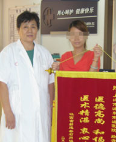

MINI安全人流保障1：源自英国，国际认证
MINI人流中国专家王桂兰主任
接受腾讯采访
剑桥大学阿登布鲁克医院
Alan Method sheen教授公布 "MINI保宫无痛人流术"
女性意外怀孕群体急剧扩大，引起了全球各界的注意。每年全世界大约有2500万到5500万次人流。2009年，第5届全球医学研讨峰会在伦敦召开，来自英国剑桥大学阿登布鲁克医院的Alan Method sheen教授公布了一项安全终止意外怀孕的0损伤、0残留的"MINI保宫无痛人流术"，此项技术受到大会的关注并荣获大会金奖，被英国BMA、英国妇科协会、美国FDA联合推荐为终止女性意外怀孕的首选技术，引来各国妇科医院、研究机构竞相引进！
2010年，上海南浦妇科医院作为上海首家妇科专科医院率先引进"MINI保宫无痛人流术"，成为华东地区首家且唯一开展此国际技术的医疗机构，已造福12万意外怀孕女性，无一例失败事故！

MINI人流中国专家王桂兰主任
接受腾讯采访
剑桥大学阿登布鲁克医院
Alan Method sheen教授公布 "MINI保宫无痛人流术"
女性意外怀孕群体急剧扩大，引起了全球各界的注意。每年全世界大约有2500万到5500万次人流。2009年，第5届全球医学研讨峰会在伦敦召开，来自英国剑桥大学阿登布鲁克医院的Alan Method sheen教授公布了一项安全终止意外怀孕的0损伤、0残留的"MINI保宫无痛人流术"，此项技术受到大会的关注并荣获大会金奖，被英国BMA、英国妇科协会、美国FDA联合推荐为终止女性意外怀孕的首选技术，引来各国妇科医院、研究机构竞相引进！
2010年，上海南浦妇科医院作为上海首家妇科专科医院率先引进"MINI保宫无痛人流术"，成为华东地区首家且唯一开展此国际技术的医疗机构，已造福12万意外怀孕女性，无一例失败事故！
-
王桂兰无痛人流首席专家
临床经验：30多年
擅长：应用MINI 技术进行无痛人流手术，以及在宫颈炎、宫颈糜烂、子宫肌瘤、卵巢肿瘤、子宫内膜异位、盆腔炎、不孕症等方面都有丰富的临床经验。
-
张秀萍中医副主任医师
临床经验：20余年
擅长：采用中西医结合方法，治疗阴道炎、宫颈炎、盆腔炎、卵巢囊肿等各类妇科疾病，尤其对妇科更年期综合征、痛经、月经不调、乳腺疾病的治疗造诣深厚。
-
桂彩云妇科专家
临床经验：20余年
擅长：MINI无痛人流、不孕不育、阴道炎、宫颈糜烂、盆腔炎等妇科疑难杂症，致力于妇科炎症诊疗手段的创新与改进，是典型的学者型医师，因疗效显著而受到广大患者的一致好评。
-
路青主任
临床经验：20余年
擅长：MINI无痛人流、妇产科腹部、盆腔的各项手术。能熟练开展卵巢肿瘤、巧克力囊肿、盆腔疾病等手术；保留子宫的子宫肌瘤核除术
-
黄玲妇科专家
临床经验：20余年
擅长：诊治多囊卵巢综合症、MINI无痛人流、输卵管不通、子宫内膜异位症、月经不调、闭经、子宫肌瘤、卵巢囊肿等疾病。
-
洪晓敏首席妇科专家
临床经验：30余年
擅长：MINI无痛人流，对妇科疑难杂症、子宫肌瘤、卵巢肿瘤、子宫内膜异位、盆腔炎、宫颈炎、外阴疾病、月经不调、具有独特诊断及治疗方法，并熟练掌握妇科微创手术的技巧。
王主任为小琳病情分析
大学生小琳，因意外怀孕，在网络上对比医院后，选择南浦MINI保宫人流术，终止了意外妊娠，才让她的大学生活没有结束，还解开了心结。王主任与小静合影
打工妹小静，发现自己怀孕，很无助。因为男朋友已经在半个月前辞职回家了，从此再也联系不上。无奈只好求助朋友帮她介绍了南浦的MINI保宫无痛人流术，终止了妊娠。手术专家为小琳分析病情
公务员张女士因职位升级需进行考核，没想到意外妊娠了，她决定暂时不要这个孩子。后来，她通过网络预约选择了南浦"NINI保宫无痛人流技术"，轻松解除了意外。 路主任与王太太合影
家庭主妇的王太太已生有一子，没想到意外怀孕了，而且经检查发现是宫角妊娠，之前求助过很多医院都不能终止意外妊娠，后来网络找到南浦医院，采用国际MINI技术帮她解除警报。护士照顾韩国女尹女士
韩国女尹女士感叹同是做人流两家医院给我不同感受，这次选择南浦的MINI保宫无痛人流术，医院技术到位，不影响以后的怀孕。上海首家发布
《人流白皮书》的妇科医院
由我院与中国名医协会、中国医疗医药管理协会共同编著的上海市首部《MINI人工流产手术操作安全规范标准》，已于2010年5月20日正式发布。作为规范的制定者，我院确保每一台人流手术都按照规定进行操作，保证每一台人流手术都万无一失。
上海首家发布
《人流白皮书》的妇科医院
由我院与中国名医协会、中国医疗医药管理协会共同编著的上海市首部《MINI人工流产手术操作安全规范标准》，已于2010年5月20日正式发布。作为规范的制定者，我院确保每一台人流手术都按照规定进行操作，保证每一台人流手术都万无一失。
上海首家发布
《人流白皮书》的妇科医院
由我院与中国名医协会、中国医疗医药管理协会共同编著的上海市首部《MINI人工流产手术操作安全规范标准》，已于2010年5月20日正式发布。作为规范的制定者，我院确保每一台人流手术都按照规定进行操作，保证每一台人流手术都万无一失。